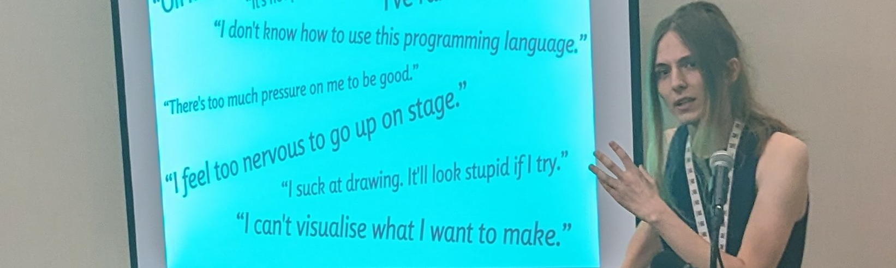
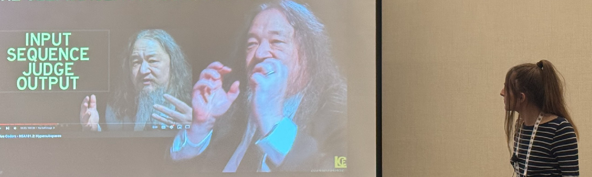
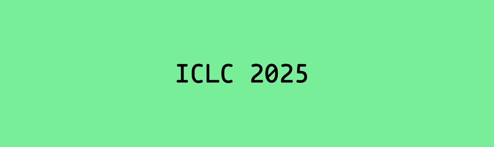
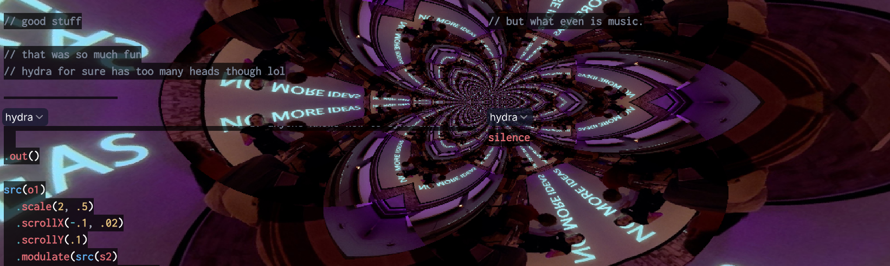
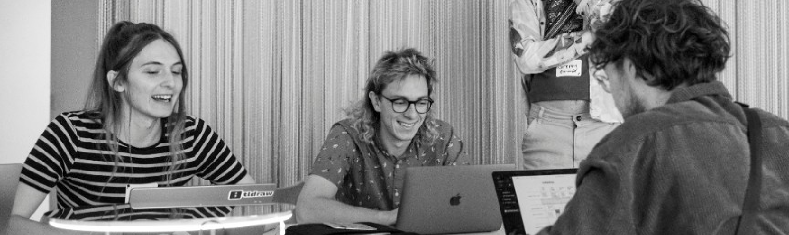
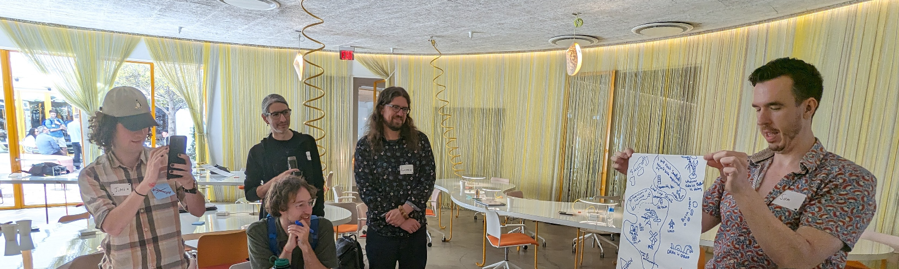
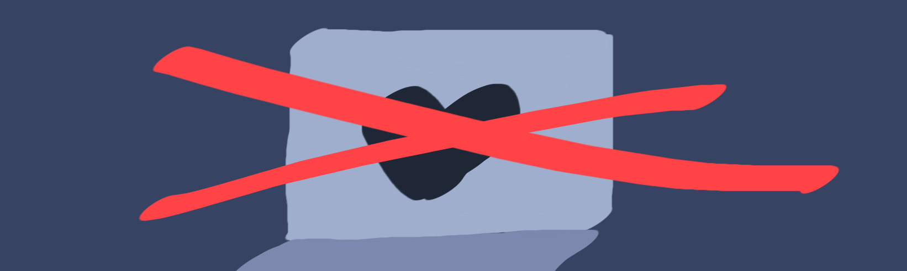
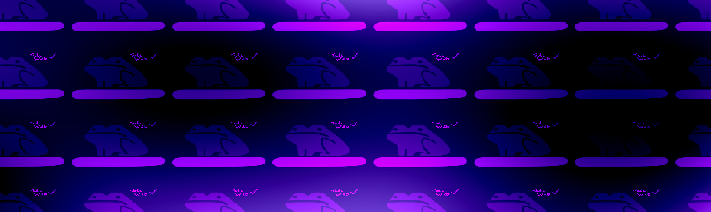

The weekly TODEPOND PONDCAST is for paying supporters only.
Please only listen / read if you've
paid
:)
Welcome back to another non-weekly episode of the...
🐸 TODEPOND PONDCAST 🐸
I'm late again! I'm very late, so it's a three-in-one.
WARNING. This is a triple length pondcast.
This time it's because I was away in Los Angeles! Keep reading for more details...

I was in Los Angeles for SPLASH, a big week-long academic conference about coding. It's a collection of many different workshops and other things that happen in the same place.
First up, it was LIVE, which is all about live coding. (The clue's in the name).
At LIVE, I presented my live coding tool, Arroost, which you saw in the Arrows video already. In the presentation, I argue that we should pay more attention to supporting people's emotions within the tools that we make.
The [presentation] was based on my earlier essay about the same thing. I'm proud of them both so I'd be very grateful if you gave them a look!
Watch the presentation here. Read the essay here.

Two days later, I presented at Onward. It was about the essay I wrote with Dave Ackley.
Onward is a real academic setting for new and radical ideas about coding. They have PDFs and hidden costs and everything. It was crazy to be standing among some industry legends like Felienne Hermans and Mary Shaw, two people I really look up to. I tried to keep my cool around them, and I think I only moderately embarrassed myself.
It's also crazy to have a PDF to my name: A real citable academic paper— I mean— essay, with an index number thingy and everything. I think it's called a "DOI" but I have no idea what it stands for and I don't care to find out.
Anyway, yes, our essay— I mean— our paper is about "natural code", the idea that all communication can be meaningfully viewed as code, that can be transmitted and implemented and run, like code. It's natural code.
To arrive at that idea, the essay goes through some slightly trippy realisations, and it was nice to be able to perform those notes in person.
Again, I'd be very grateful if you gave our essay a read and/or the talk a watch.
The conclusion of SPLASH marked the end of todepond talk season. We celebrated by going to disneyland.

Just before SPLASH, I submitted a workshop to ICLC.
What is it with academic events and long capital letter acronyms?
I have no idea what ICLC stands for but I'm pretty sure that "Live Programming" is in there somewhere. Anyway, I put in an application to run a workshop about cellpond and I have no idea if I'll be accepted or not.
The idea behind the workshop is that cellpond is "live" coding in the sense that the computation running inside cellpond can be a living system. It can be "alive". Or at least, somewhere along the spectrum of aliveness. It's not at zero. And this is made easier by a couple of things:
If you watched my talk on natural code, you might notice some links here. And that's because this workshop follows on from that most directly. I hope to elaborate more in the future!
If I get rejected, maybe I can find another chance to give the workshop. We'll see!
And now onto part two...

If you watched either of my two livestreams, you may have seen me using strudel to make some live music. Yes, strudel is a live programming tool that you can use in any web browser to make music on-the-spot (live). And I've been learning how to use it, following on from my arroost work.
The thing is, it's way more fun to do strudel with other people: an audience and also live collaborators (both, simultaneously).
So strudel's creator, Felix Roos, suggested to me that I could try out flok, another tool, this one by Damián Silvani. Yes, flok is a live collaboration tool for various different live programming tools, including strudel. It splits the screen up into different parts, with each part being a different tool. It means that multiple people can make music (or visuals) together, at the same time.
So I started doing all of my music-making in a single flok room, which means that anyone else can join, at any time, and it has really been quite special. To make music with random strangers on the internet has been— I'm not exaggerating to say that it has sometimes felt like a religious experience. I'll write more on it another time but—
The problem with this approach is that— by using this flok room, random strangers can run code on your computer, which can be abused. It's probably not okay to rely on trust here, so I created a new website to host a safe little sandboxed version on. I barely did anything at all, but it's nice to be able to use it without worrying about people messing around with my computer, by popping open dialogs, or opening tabs, or whatever, unless I messed something up.
I haven't been sharing around the link much, but you can find it at todepond.cool/flok. Leave me (or others) a message there!

I also attended the Ink & Switch event at SPLASH. It was an "unconference", which means that anyone can put forward activities for people to do.
I put forward an activity called "strudel for beginners and experts". My hope was that some beginners (like myself) would attend, and some experts would also show up to help teach us all. Luckily, it happened, and strudel expert Ian Clestor helped a bunch of people get started, even pulling out his slides from a strudel workshop he ran at a previous thing.
Felix Roos, creator of strudel, also showed up!!!!! He showed up remotely, of course, in my safe-ish flok room. It was fun making music in strudel with him and also some other people who had never used it before. I enjoyed seeing the look on Josh Pollock's face after a long session with Felix. It's nice to share a glimpse of the "religious experience" thing I was talking about earlier. Anyway...

I put forward another activity with Ivan Reese. It was a sequel to our session from last year, stop computerprogramming.
Both of these sessions were put on by our fictional "Institute of weirdcoding" organisation, as part of some extremely slowly advancing lore.
This year's session was called "NO MORE IDEAS", which follows on from my tadi web talk.
In the session, we all mapped out all of the different movements for "better computing", like local-first, permacomputing, IndieWeb, small web, cold-blooded software, and so on. The list is very long.
The second thing we did was to eliminate any incompatible movements, while trying to keep as many as possible. For example, Web3 is incompatible with the sustainable web manifesto, so we got rid of it. (Web3, not the sustainable web). (We got rid of Web3).
The third task was to identify the running themes within these different movements. We tried to identify what these movements were getting at, beyond just their names and norms.
And then we tried to chart out these themes. Were any related? Was it a spectrum? How many dimensions were there?
In the end, we realised that the themes ended up landing in one of three groups. One was about staying simple and small. One was about being connected. And one was about being able to last a long time.
And there was this epiphany moment, where it became apparent what these three groups were:
The thing bridging all of these movements together was "time"!
It was a silly activity really. It was quite funny to carry out such a seemingly pointless task. But it did cause a lot of good discussion, and some people shared their useful insights with me. More on that another time.
Right, we're getting there... This is part three.
Alex McLean asked me if he could put me down as a visiting researcher, which could mean "doing something patterny for a week or so". It would happen "quite far in the future" and we "would sort the details out nearer the time".
So of course I said yes, without asking any follow up questions because for me it's a no-brainer.
This all depends on Alex securing funding, of course, which I expect to happen.
I'm still a researcher-in-residence at Ink & Switch, and have been for a while now. It's been very helpful to my learning and practice.
And I wonder how long I'm allowed to stay in that role, or how long I should stay. If it lasts forever, it's not really a "residency", is it?

Sometimes people ask me what my work is "about", and I've never been able to give them a good answer.
Part of the reason for that is because of how I tend to work in a "bottom-up" way. I don't start with a goal, or a use-case. I start by exploring 'primitives', the lego pieces that I put together to do stuff.
I suppose I've always followed my nose, with making videos, and eventually accidentally reaching people, and entering research and art worlds.
Still, it's helpful to be able to give people something to hold onto, so that they can put my work in a box in their head. So I've been playing around with the term "empathetic computing" and I'm not sure about it yet. It sounds a bit too pompous, I think. But we'll see.

Of course, I really am working towards "total todepond", which means working on all this todepond work full-time.
It's really hard keeping this all up at the same time as doing a full-time job, but I've nearly always done that. The only time I didn't was over nine months a couple of years ago. That period of time led to New Cellular Automata and Screens.
I'm in no rush to leave my (wonderful) job, but I am thinking that my eventual next job will hopefully be total todepond. My work now is to prepare for that. So of course...
I am immeasurably thankful for your support. It's everything to me, thank you thank you thank you, for making all of this possible. Welcome in, newbies! And welcome back to all the old-timers. What a journey this is turning out to be! Until next time... Wherever you are in the world... Whatever you're doing... I hope you have a great week :)
Days since tode fell asleep: 674Back to the pondcast.